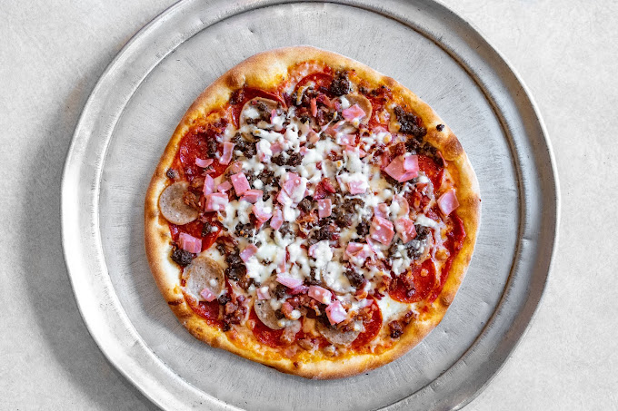

1. New York Pizza
Location: New York Pizza, 337 Tate St, Greensboro, NC 27403 | Hours: 11am-11pm daily | Specialties: Gourmet pizzas, calzones

Margherita Madness

Pepperoni Paradise

Veggie Delight Calzone